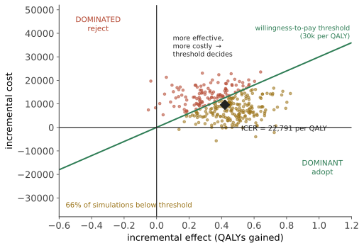

本页目录
系统 I · 成本效果、QALY 与资源分配
前面的页面都在问"这个治疗对这个人有多大用"。本页问一个不同的问题：在资源有限的前提下，把钱花在哪里能产生最多的健康？ 这是一个不可回避的问题——不做显式的取舍，就会做隐式的、更不公平的取舍。
1. 机会成本：本页的全部起点
任何医疗支出都排挤了别的支出。 花在一项年费百万的疗法上的钱，本可以用于筛查、疫苗、基层医疗或护士编制。
"不惜一切代价"在个体伦理上可以理解，在系统层面则不成立——因为"代价"落在看不见的其他患者身上。显式的成本效果分析的价值不在于省钱，而在于让这个取舍可见、可讨论、可问责。
2. 四种经济学评价
| 类型 | 收益的度量 | 用途 |
|---|---|---|
| 成本最小化 | 假定效果相同 | 仿制药替换 |
| 成本-效果分析 CEA | 自然单位（每避免一例卒中、每延长一年生命） | 同类干预比较 |
| 成本-效用分析 CUA | QALY | 跨领域比较（最常用） |
| 成本-收益分析 | 货币 | 需给健康定价，争议大 |
3. QALY：定义、用法与批评
质量调整生命年（QALY） = 生存年数 × 该期间的健康效用值（1 = 完全健康，0 = 死亡，可为负）。
效用值的来源：EQ-5D 等量表 + 人群偏好调查（时间权衡法、标准博弈法）。

阈值：各国不同（英国 NICE 长期使用每 QALY 约 2–3 万英镑量级的参考区间，并对终末期与高度创新疗法设例外）。世界卫生组织曾建议以人均 GDP 的倍数作参考，但该做法后来被其自身与学界批评为过于机械。
对 QALY 的四条主要批评（必须一并讲，否则这一页就成了宣传）：
- 对残障者不利：基线效用低的人从同一干预中获得的 QALY 增量较小 → 可能系统性地不利于慢性病与残障群体；
- 年龄隐含歧视：年轻人剩余寿命长 → 同一干预产生更多 QALY；
- 效用值的测量本身有争议：由谁评？ 一般公众评估某状态时系统性低于实际处于该状态者的自评（适应现象）；
- 忽略分配公平：QALY 最大化对"谁获得"这件事是中立的，而社会通常并非如此（对重症、儿童、终末期有额外权重）。
这些批评没有推翻 QALY，但说明它是一个输入而非裁决——多数国家的评估机构在 ICER 之外还考虑严重程度、公平性、未满足需求与创新性。
4. 成本效果的直觉排序
一些量级感（示意，随地区差异很大）：
| 干预 | 成本效果 |
|---|---|
| 儿童常规免疫、控烟政策、加碘/加氟 | 常常是省钱的（cost-saving） |
| 高血压与他汀用于高危者（仿制药） | 极佳 |
| 结直肠癌与宫颈癌筛查 | 好 |
| 大多数常规慢病管理 | 中等 |
| 晚期肿瘤的部分新药 | 常在阈值之上很多 |
| 部分罕见病基因/细胞疗法 | 极高（单次数十万至数百万量级） |
| 无适应证的影像检查与"套餐体检" | 负收益（花钱且有害，第 03、17 页） |
最后一行值得强调："节省"的最大空间往往不在于拒绝昂贵的有效疗法，而在于停止无效或有害的常规做法（第 09 页的去实施）。
5. 罕见病与"一次性疗法"的定价难题
基因与细胞疗法把一个旧问题推到极致：一次性给药、终身获益、极高价格。
结构性困难：
- 长期获益尚未观察到（疗效持久性未知）→ 模型必须外推；
- 一次性支付 vs 分期收益的错配 → 催生了按疗效付费（outcome-based agreements）与分期付款等新支付模式；
- 人数极少 → 研发成本分摊到少数患者；
- 社会通常愿意为罕见与危重情况支付更多（"救援规则"）——这本身是一个价值判断，不是分析结论。
6. 卫生系统的三个"看不见的"成本效果问题
① 过度检查的级联：一次无适应证的影像 → 偶发瘤 → 随访影像 → 活检 → 并发症。每一步单独看都"合理"，整体是净危害（第 03 页）。
② 行政成本：不同卫生系统的行政开支占比差异巨大，这部分支出不产生任何健康。
③ 基层与预防的相对投入不足：基层医疗与公共卫生的成本效果通常远优于专科与住院服务，但资金分配常与之相反——部分原因是收益弥散且延迟，而支出立即可见（与第 17 页"筛查收益滞后"是同一个时间不对称）。
7. 迁移：这一页与你工作的接口
🔗 成本效果分析的形式与你熟悉的框架同构：
- ICER = 增量成本 / 增量收益，本质上是边际分析——与资本配置的边际收益率比较是同一件事；
- 概率敏感性分析（图中的散点云）= 蒙特卡洛模拟参数不确定性，输出的是"在多大比例的情形下该干预低于阈值"——这正是你在预测层需要的东西：不是点估计，而是决策在参数不确定下的稳健性；
- "占优"与"被占优"象限的存在 提醒：很多决策不需要阈值就能定，把精力花在真正需要权衡的那个象限；
- QALY 的批评清单 是一个通用教训：任何把多维价值压成单一标量的指标，都会在被压掉的那些维度上产生系统性偏差——这对任何绩效指标都成立。
下一页：把所有数字交回给患者——风险沟通与共同决策。